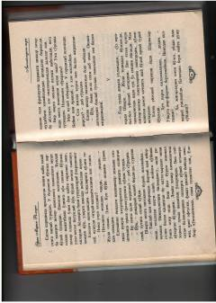

LTTungi Lissabondagi muhojirlar hayoti va taqdirlari haqidagi ta'sirli roman.
Ushbu asar muhojirlik mavzusi,inson taqdiri va murakkab hayotiy kechinmalarga bag'ishlangan. Voqealar tungi Lissabondagi suhbatlar va qahramonlarning ichki kechinmalari orqali ochib beriladi. Kitobda insoniylik, qochqinlik va hayot mazmuni chuqur falsafiy yondashuv bilan tasvirlangan.